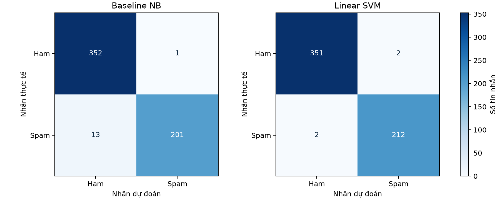

Baseline NB và Linear SVM
UCI SMS Spam Collection, Mendeley SMS Phishing và India SMS. Bản demo mở rộng riêng, không thuộc kết quả nộp BTC.
Số tin trong tập huấn luyện: 6391. Đánh giá mở rộng: 567 tin ngoài phần huấn luyện, chia theo nhóm gần trùng.
| Mô hình | F1 Spam | Precision Spam | Recall Spam | Ham FPR |
|---|
| english_baseline | 96.63% | 99.50% | 93.93% | 0.28% |
| english_char_svm | 99.07% | 99.07% | 99.07% | 0.57% |
Đánh giá phát triển trên các nguồn đã biết, chưa phải kiểm thử mù độc lập hoặc bảo đảm kết quả với mọi tin mới.
